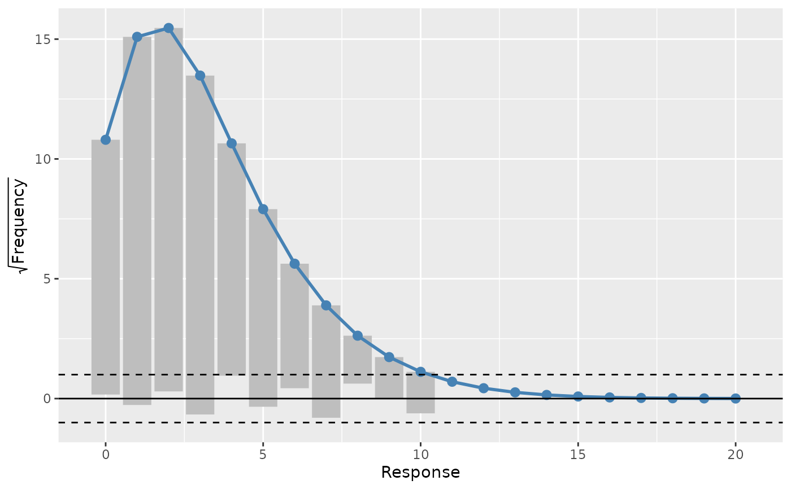
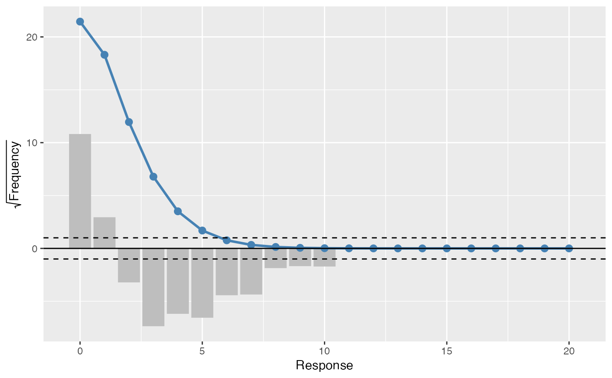

A rootogram is a model diagnostic tool that assesses the goodness of fit of
a statistical model. The observed values of the response are compared with
those expected from the fitted model. For discrete, count responses, the
frequency of each count (0, 1, 2, etc) in the observed data and expected
from the conditional distribution of the response implied by the model are
compared. For continuous variables, the observed and expected frequencies
are obtained by grouping the data into bins. The rootogram is drawn using
ggplot2::ggplot() graphics. The design closely follows Kleiber & Zeileis
(2016).
# S3 method for rootogram
draw(
object,
type = c("hanging", "standing", "suspended"),
sqrt = TRUE,
ref_line = TRUE,
warn_limits = TRUE,
fitted_colour = "steelblue",
bar_colour = NA,
bar_fill = "grey",
ref_line_colour = "black",
warn_line_colour = "black",
ylab = NULL,
xlab = NULL,
...
)| object | and R object to plot. |
|---|---|
| type | character; the type of rootogram to draw. |
| sqrt | logical; show the observed and fitted frequencies |
| ref_line | logical; draw a reference line at zero? |
| warn_limits | logical; draw Tukey's warning limit lines at +/- 1? |
| fitted_colour, bar_colour, bar_fill, ref_line_colour, warn_line_colour | colours used to draw the respective element of the rootogram. |
| xlab, ylab | character; labels for the x and y axis of the rootogram.
May be missing ( |
| ... | arguments passed to other methods. |
A 'ggplot' object.
Kleiber, C., Zeileis, A., (2016) Visualizing Count Data Regressions Using Rootograms. Am. Stat. 70, 296–303. doi: 10.1080/00031305.2016.1173590
rootogram() to compute the data for the rootogram.
load_mgcv()
df <- data_sim("eg1", n = 1000, dist = "poisson", scale = 0.1, seed = 6)
# A poisson example
m <- gam(y ~ s(x0, bs = "cr") + s(x1, bs = "cr") + s(x2, bs = "cr") +
s(x3, bs = "cr"), family = poisson(), data = df, method = "REML")
rg <- rootogram(m)
# plot the rootogram
draw(rg)

# change the type of rootogram
draw(rg, type = "suspended")
